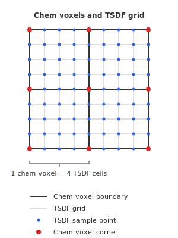

Chem Boundary
Background on the chemistry model
This is background to understand the requirements of the chem boundary systems.
MEDYAN models stochastic reaction diffusion dynamics using the approach described in (see Isaacson and Peskin 2006)
This is a Eulerian method on a cartesian mesh of cubes with an embedded boundary.
Isaacson and Peskin (2006) calls these cubes cells, and they were called compartments in the C++ code base. However, both cells and compartments are biological terms, so to avoid confusion the term chem voxels is used.
Each chem voxel stores a count of each of the diffusing species.
Chem voxels typically have a side length of 500 nm. This means for a 16 micrometer cell there may be about 30,000.
Inside a chem voxel, diffusing species can react with each other. Diffusing species can move between neighboring chem voxels with first order diffusion reactions.
Reactions between diffusing species can result in the creation of an object with a continuous position, such as a filament being nucleated.
In addition, objects with continuous positions can react with diffusing species.
Boundary definition
The chem boundary defines a region of space. In MEDYAN, the chem boundary is constructed as the intersection of domains defined by geometric primitives and meshes.
During a simulation the chem boundary can change, but in many cases it will be fixed.
Primitives
Primitives define simple geometric domains with analytical signed distance functions:
- Planes: Define a half-space. One side of the plane is inside the domain, the other is outside.
- Capsules: A cylinder capped with hemispheres at each end. The domain is the interior of the capsule.
Meshes
Triangular meshes represent membranes or other complex surfaces. The domain can be either the interior or the exterior of the mesh.
Domain intersection
The final chem boundary is the intersection of all specified domains (both primitives and meshes). A point in space is inside the chem boundary only if it is inside every domain.
This approach allows flexible construction of complex geometries. For example:
- A cell cortex can be modeled as the interior of a membrane mesh.
- A region between two membranes can be modeled by intersecting the exterior of an inner mesh with the interior of an outer mesh.
- Flat boundaries (e.g., a substrate or coverslip) can be added using planes.
Because only intersection is used, unlike a general-purpose constructive solid geometry system which would support union and other set operations, arbitrary boundaries cannot be created using primitives alone. Instead, meshes must be used to create arbitrarily shaped domains. The code assumes there are a small number of primitives, as is the case in simple simulations where the boundary is a sphere, box, cylinder, or capsule.
Each context has only one chem boundary, and thus one domain where chemistry takes place. This means that to simulate chemistry in multiple cells, or in separate cytoplasmic and nuclear domains, one context must be created per domain.
Requirements
The chem boundary system must support several operations:
Voxel geometry calculations
Diffusion rates between neighboring voxels depend on the shared surface area, and volume-dependent reaction rates (e.g., bimolecular reactions) require accurate voxel volumes. For voxels entirely inside or outside the boundary, this is straightforward. However, voxels cut by the boundary require computing the partial volume and the areas of faces inside the domain.
Specifically, the diffusion hopping rate between two neighboring voxels is (Isaacson and Peskin 2006):
\[k = \frac{D \cdot A}{V \cdot L}\]
where \(D\) is the diffusion coefficient, \(A\) is the shared face area, \(V\) is the source voxel volume, and \(L\) is the voxel spacing. For voxels cut by the boundary, \(A\) and \(V\) will be reduced from their full values of \(L^2\) and \(L^3\).
Position to voxel lookup
When continuously positioned objects (such as filaments) react with diffusing species, the system must determine which chem voxel contains the object’s position.
Position sampling for nucleation
When a nucleation reaction creates a new positioned object, a position must be sampled within the voxel where the reaction occurred. The sampled position must be conservatively inside the boundary — if the boundary is defined by a mesh, positions too close to the surface can cause numerical issues during force calculations.
Boundary movement and voxel deactivation
When the chem boundary moves, some voxels may transition from inside to outside. These voxels must be deactivated, and their diffusing species must be moved to nearby active voxels.
Additionally, voxels with volumes below a threshold must be deactivated even if they are partially inside the boundary. This is necessary because volume-dependent reaction propensities can numerically explode when the volume is very small.
Truncated signed distance fields
Because the boundary can be quite complex, we make use of a truncated signed distance field (TSDF) to accelerate the various boundary computations. By using a grid based acceleration method, the assumption is that simulations are dense. Tree based methods such as a BVH would use much less memory and could be faster in very large sparse system.
Background
A signed distance field (SDF) stores, at each point in space, the signed distance to the nearest boundary surface. By convention, negative values indicate points inside the domain, and positive values indicate points outside. The zero level set of the SDF defines the boundary surface.
A truncated signed distance field (TSDF) clamps the signed distance to ±max_distance. This truncation makes TSDF generation from meshes efficient: only grid points near the surface need accurate distance computations, while distant points are simply assigned the clamped value.
Grid structure
The TSDF is stored on a Cartesian grid that is aligned with the chem voxel grid but with finer spacing. Typically, the TSDF grid oversamples the chem voxels by a factor of 4 in each dimension.
The TSDF values are defined at the corners of the TSDF grid cells. Importantly, the corners of the chem voxels coincide with a subset of the TSDF grid points.

This alignment ensures that TSDF values at chem voxel corners are directly available without interpolation, while the finer grid provides the resolution needed for accurate cut voxel geometry calculations.
TSDF Algorithms
Generation
The TSDF is computed differently for primitives and meshes, then combined by intersection (taking the maximum signed distance at each grid point).
Primitives (planes and capsules): For each grid point, the signed distance to each primitive is computed analytically:
- For planes, this is simply the dot product of the position with the plane normal minus the offset.
- For capsules, the distance is computed to the closest point on the capsule’s central axis, minus the capsule radius.
The maximum distance across all primitives gives the signed distance to the primitive boundary. Values are clamped to ±max_distance.
Meshes: Computing signed distances to a triangular mesh is more involved. The algorithm follows the method described by Bærentzen and Aanæs (2002), which handles sharp corners and edges correctly using pseudo-normals.
The key steps are:
Compute pseudo-normals: For each vertex, the pseudo-normal is the angle-weighted average of the normals of incident triangles. For each edge, it is the sum of the two adjacent triangle normals. These pseudo-normals ensure correct sign determination near sharp features.
Compute unsigned squared distances: For each triangle, the algorithm iterates over nearby grid points (within max_distance of the triangle’s bounding box). For each point, it determines whether the closest point on the triangle is on the face, an edge, or a vertex, and computes the squared distance accordingly.
Determine sign: The sign is determined by the dot product of the vector from the closest surface point to the query point with the appropriate pseudo-normal (triangle, edge, or vertex).
Propagate signs: Grid points far from the mesh may not be visited. A sweep in all six axis directions propagates the sign from computed regions to fill in the rest of the grid.
Convert to distance: Finally, squared distances are converted to actual distances and clamped to ±max_distance.
Combining boundaries: When both primitives and meshes define the boundary, their TSDFs are combined by taking the element-wise maximum. This implements the intersection of domains — a point is inside only if it is inside all boundary components.
Chem voxel area and volume
To compute the volume and face areas of a chem voxel cut by the boundary, the algorithm uses the fine TSDF grid within that voxel.
For each chem voxel:
Extract the local TSDF: The portion of the TSDF corresponding to this voxel (a subgrid of size oversampling_factor+1 in each dimension) is extracted.
Check trivial cases: If all TSDF values are negative (fully inside), the volume is simply L³ and all face areas are L². If all are positive (fully outside), volume and areas are zero.
Isosurface extraction: For cut voxels, the marching tetrahedra algorithm (see Doi and Koide (1991)) extracts the zero isosurface as a triangle mesh, with the boundary capped where it intersects the voxel faces.
Compute volume: The signed volume is computed by summing the signed volumes of tetrahedra formed by each isosurface triangle with the origin.
Compute face areas: For each of the six faces of the voxel, the algorithm identifies which triangles lie on that face and sums their areas. This gives the portion of each face that is inside the domain, which is needed for diffusion rate calculations.
Comparison to other approaches
MEDYAN C++: For membrane boundaries, the computeSlicedVolumeArea() method fits a single plane to the triangles overlapping a compartment (area-weighted average position and normal), then uses an analytical plane-cube slicing formula (planeUnitCubeSlice). This is fast but assumes the membrane is locally planar within each compartment.
Analytical methods: When the boundary is a simple primitive (plane, sphere, cylinder), exact formulas exist for the intersection of that primitive with a cube. These are exact but require separate implementations for each primitive type and do not handle combinations of boundaries.
The TSDF approach used in MEDYAN.jl handles arbitrary boundary shapes consistently, including curved surfaces and multiple intersecting boundaries, at the cost of more computation. The resolution is configurable through the oversampling factor.
Is inside
To check whether a position is conservatively inside the boundary by at least a minimum distance, the algorithm uses the cached TSDF.
Bounding the signed distance using the triangle inequality:
The signed distance function satisfies the triangle inequality: for any two points, their signed distances differ by at most the Euclidean distance between them. If a TSDF vertex has value \(t_v\) and is at distance \(r\) from the query point \(p\), then:
\[\text{TSDF}(p) \in [t_v - r, t_v + r]\]
This provides upper and lower bounds on the truncated signed distance at \(p\) without computing it directly.
The algorithm:
Locate the containing TSDF voxel: Convert the position to TSDF grid coordinates and find the eight vertices of the containing voxel.
For each vertex, compute the distance \(r\) to the query point and apply the bounds:
- If \(t_v - r > -\text{min\_distance}\): even in the best case, the point cannot be inside by the required margin → return
false - If \(t_v + r < -\text{min\_distance}\): even in the worst case, the point is definitely inside by enough margin → return
true - Otherwise: this vertex is inconclusive, continue to next vertex
- If \(t_v - r > -\text{min\_distance}\): even in the best case, the point cannot be inside by the required margin → return
Fallback: If all eight vertices are inconclusive, return
false(conservative).
Restriction on min_distance:
The maximum possible distance \(r\) from a query point to any vertex of its containing TSDF voxel is the voxel diagonal: \(r_{\max} = \sqrt{3} \cdot \text{grid\_spacing}\).
For the algorithm to ever return true, we need the upper bound to satisfy: \[t_v + r < -\text{min\_distance}\]
But TSDF values are clamped to \(\pm\text{max\_distance}\). For a point deep inside the boundary, \(t_v = -\text{max\_distance}\). In this case: \[-\text{max\_distance} + r_{\max} < -\text{min\_distance}\]
Rearranging: \[\text{min\_distance} < \text{max\_distance} - \sqrt{3} \cdot \text{grid\_spacing}\]
If this condition is not met, the truncation could prevent the algorithm from proving a point is inside by the requested margin. The function throws an error in this case, suggesting the user increase max_distance.
A more sophisticated approach could interpolate or combine information from multiple vertices to make better use of the available data, but the current algorithm keeps the logic simple.
This conservative approach is important for nucleation sampling — we must never place a new object outside the boundary or too close to a mesh surface.
Comparison to other approaches
An alternative approach would store, for each chem voxel, a list of nearby triangles. To check whether a point is inside by a margin, the algorithm would:
- Look up the triangles associated with the containing chem voxel
- Compute the exact signed distance to each triangle
- Return
trueif the minimum signed distance is less than -min_distance
This triangle list approach has some advantages:
- Exact results: No conservative approximation; the algorithm can determine exactly whether a point is inside by the required margin.
However, the TSDF approach used in MEDYAN has its own advantages:
- Constant-time queries: The triangle inequality check examines only 8 TSDF values regardless of mesh complexity. The triangle list approach scales with the number of nearby triangles.
- Unified handling of primitives and meshes: The TSDF combines all boundary components into a single representation. A triangle list would need separate handling for analytical primitives.
A BVH (bounding volume hierarchy) over triangles is another option that would give exact results with O(log n) query time. This is attractive for very large or sparse domains but adds implementation complexity and may have higher constant factors for the small, dense systems typical in MEDYAN.
The TSDF approach strikes a balance: it provides fast, conservative inside checks suitable for nucleation sampling while reusing the same data structure needed for volume and area computations.
Position sampling for nucleation
When a nucleation reaction fires in a chem voxel, a position must be sampled for the new object. The position must be conservatively inside the boundary to avoid numerical issues during subsequent force calculations.
The algorithm uses rejection sampling:
- Sample a uniform random point within the chem voxel
- Check if the point is inside the boundary by the required margin using the
is_insidealgorithm - If not, reject and repeat from step 1
If the voxel is mostly inside the boundary, rejection sampling is efficient. For voxels that are largely cut by the boundary, many samples may be rejected.
Voxel deactivation and species redistribution
When apply_chem_boundary! is called, voxels may need to be deactivated. A voxel is deactivated if:
- Its volume (after boundary cutting) falls below
min_chem_voxel_volume_ratio × L³, where L is the voxel side length
Position to voxel lookup
When a continuously positioned object (such as a filament monomer) participates in a reaction with diffusing species, the system must determine which chem voxel contains the object’s position.
For positions clearly inside the domain, this is simple integer division: divide the position by the voxel spacing and convert to a voxel index.
However, the position may be in a voxel that has been deactivated (volume below threshold or outside the boundary). In this case, the algorithm searches for the nearest active voxel:
- Check the voxel containing the position — if active, return it
- Check the six face-adjacent neighbors — return the nearest active one
- If no neighbor is active, search all voxels in the grid
This fallback ensures that objects near the boundary can still interact with chemistry, even if their exact position falls in a deactivated voxel.
Redistributing diffusing species
When a voxel is deactivated, any diffusing species it contains must be moved elsewhere. For each molecule in the deactivated voxel:
- Sample a random position within the voxel
- Find the nearest active voxel to that position (using the position-to-voxel lookup with fallback)
- Move the molecule to that voxel
This approach approximately preserves spatial distribution — molecules near the boundary of the deactivated region move to the closest active voxel rather than being uniformly redistributed.
In practice, if boundaries move slowly, diffusion will naturally move most species out of shrinking voxels before they are deactivated, so few molecules need to be forcibly redistributed, but there is a lot of room for speeding up the redistribution, for example by sampling a multinomial distribution for how many molecules should move to each neighbor.
Caching and storage in the snapshot file
The TSDF is computed when first needed and cached for reuse. The cache is invalidated when:
- The chem boundary primitives change
- A membrane marked as a chem boundary moves (e.g., after energy minimization)
- The oversampling factor or max distance settings change
The TSDF itself is not saved in snapshot files, as it can be regenerated from the boundary geometry. However, the configuration parameters (chem_boundary_oversampling_factor and chem_boundary_tsdf_max_distance) are saved so the TSDF can be regenerated consistently when loading.
The computed chem voxel volumes and areas are also saved in the snapshot, allowing chemistry to resume without recomputing them. The chem voxel volumes and areas must be explicitly recomputed with apply_chem_boundary!